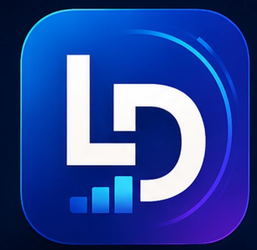
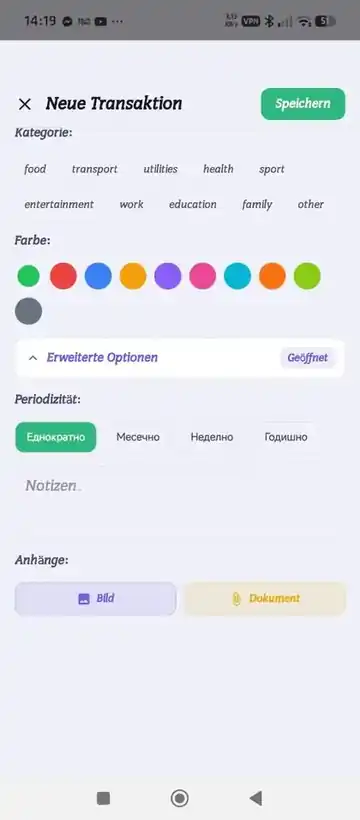
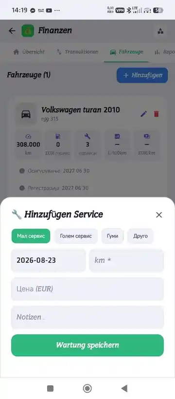

LifeDashPro
Your life. One dashboard. Organize the things you need to remember, track and act on — while keeping useful travel and live information close to the same personal workspace.

One place for the parts of daily life that usually live in separate apps.
LifeDashPro connects organization, money, documents, mobility and useful live data without forcing every tool into one crowded screen.
Built from the real app, not a concept render.
These screenshots come from the active LifeDashPro development line and show the visual direction of the actual product.


Focused modules, connected where it helps.
Each module has a clear job. The dashboard brings forward the most important upcoming information so users do not need to open every section just to see what matters today.
Notes Pro
Structured notes, reminders, attachments, archive and reusable contact workflows, with upcoming items surfaced back to the dashboard.
Finance
Income, expenses, recurring items, budgets and multi-currency workflows designed to stay connected to the rest of the personal dashboard.
Documents
Keep important records and attachments organized, with expiry-related information available for future reminders and dashboard visibility.
Family
Shared-life organization tools such as family tasks and useful household information inside the same workspace.
Vehicles & VIN
Vehicle records, service tracking, documents, VIN decoding and recall checks in one mobility-focused module.
Route Planner
Car, walk and bike routes, multi-stop planning, stop optimization, GPS start, saved routes and route-based discovery such as fuel stations and hotels.
Explore & Live
Nearby places and live-information layers across Around Me, Safety, Road and Maritime, with weather, fires, earthquakes and other useful sources where available.
Air Traffic
Explore aircraft activity using local-radius and broader area views designed for quick situational awareness.
Radio
Keep a Balkan-focused radio experience available inside the wider LifeDashPro ecosystem while the standalone Balkan Vibes product remains focused on listening.
Useful before the trip and while moving.
The route experience is designed as more than a simple A-to-B map.
Multi-stop optimization
Add multiple destinations and organize stops into a more useful visiting order.
Along the route
Surface useful stops such as fuel stations and hotels in relation to the selected route.
Reachability
Preview 15, 30, 45 and 60-minute reachable areas to understand how far a trip window can take you.
LifeDashPro Web
A browser companion is being prepared around the same LifeDashPro account and data model. The goal is to let users work with their dashboard on a larger screen without creating a second disconnected account.